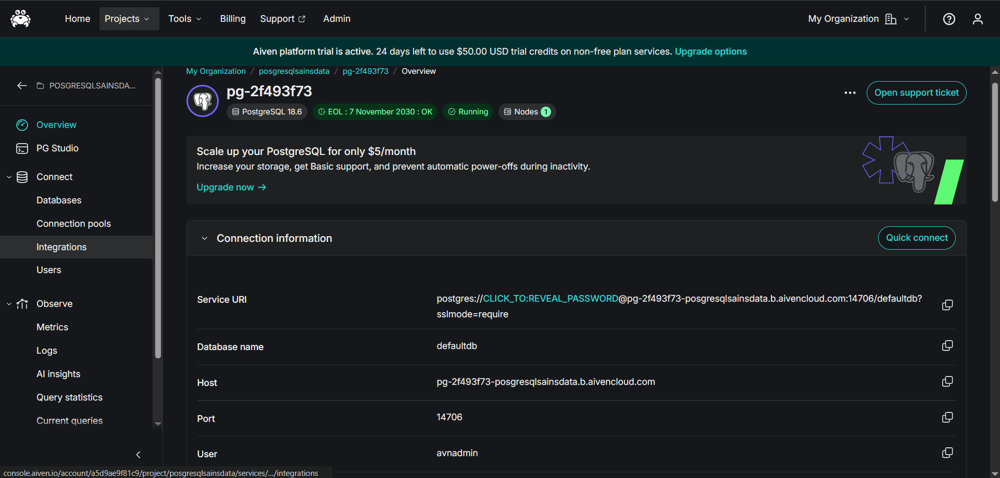
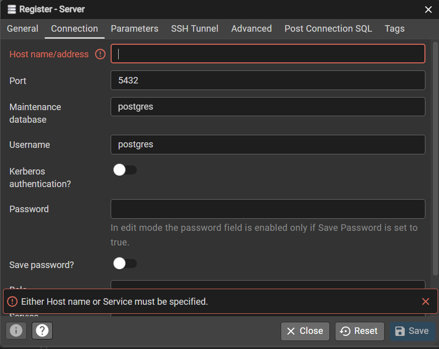
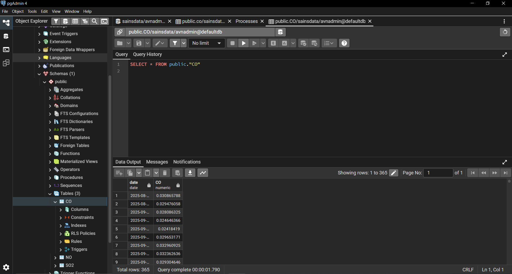
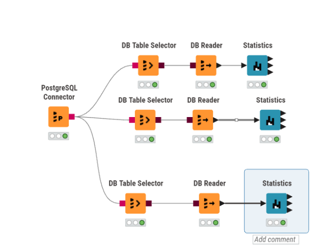
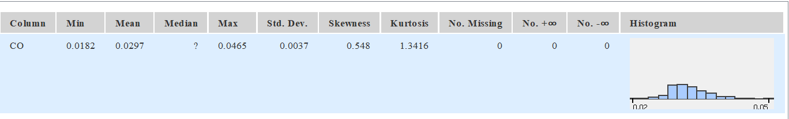

Dokumentasi: Migrasi Data Time Series Polutan ke Aiven PostgreSQL & Analisis Statistik Deskriptif di KNIME#
1. Ringkasan Alur Kerja#
[Sumber Data Time Series Polutan: NO2, CO, SO2, O3]
|
v
[PostgreSQL Aiven] <-- Bagian A: migrasi/insert data
|
v
[pgAdmin 4] <-- Bagian B: inspeksi & verifikasi data
|
v
[KNIME - PostgreSQL Connector -> DB Table Selector -> DB Reader] <-- Bagian C: tarik data
|
v
[KNIME - Statistics Node] <-- Bagian D & E: analisis statistik deskriptif
Dataset contoh pada dokumen ini berupa data konsentrasi polutan udara harian
(date, no2, co, so2) yang disimpan sebagai time series di Aiven PostgreSQL.
2. Bagian A — Migrasi Data Time Series ke PostgreSQL Aiven#
2.1 Persiapan Layanan Aiven PostgreSQL#
Login ke Aiven Console.
Buat service baru: Create a new service → pilih PostgreSQL.
Pilih cloud provider, region, dan plan (mis.
hobbyist,startup-4, dst).Tunggu status service menjadi Running.
Buka tab Overview pada service, lalu catat parameter Connection information:
Host, mis.
pg-xxxxxxxx-project.e.aivencloud.comPort, mis.
14706User (default:
avnadmin)Password (klik ikon mata / copy untuk menyalin)
Database name, mis.
defaultdbatau nama kustom (mis.PSD_Polutan)SSL Mode:
require
2.2 Membuat Tabel Time Series Polutan#
CREATE TABLE polutan (
date DATE NOT NULL,
no2 NUMERIC
);
sebagai catatan saya membuat 3 tabel yg sama jadi ada co,no2 dan so2 dan untuk struktur tabelnya sama
2.3 Migrasi Data ke Aiven PostgreSQL (Import via pgAdmin 4)#
Migrasi data time series polutan dilakukan langsung lewat fitur Import/Export Data bawaan pgAdmin 4.
Pada panel kiri pgAdmin, navigasikan ke: Databases →
sainsdata→ Schemas →public→ Tables →CO.Klik kanan tabel
CO, lalu pilih Import/Export Data….Pada dialog yang muncul:
Toggle di kiri atas diarahkan ke Import (bukan Export).
Filename: pilih file sumber data time series (
CO_Jombang_final.csv).Format: pilih
csv.
Buka tab Options, sesuaikan pengaturan berikut:
Header: aktifkan (
ON) bila baris pertama file berisi nama kolom.Delimiter:
,(atau sesuaikan dengan delimiter file sumber).Encoding: biarkan default (
UTF8) kecuali file memakai encoding lain.
Buka tab Columns, pastikan kolom yang di-import (
date,no2,co,so2) sudah sesuai urutan/nama dengan struktur tabelCO.Klik OK untuk memulai proses import. pgAdmin akan menampilkan progress bar dan notifikasi “Process completed” bila berhasil.
Verifikasi hasil import: klik kanan tabel
CO→ View/Edit Data → All Rows untuk memastikan seluruh baris time series sudah masuk.
3. Inspeksi Data via pgAdmin 4#
pgAdmin 4 dipakai untuk meninjau tabel dan datanya secara visual sebelum diproses lebih lanjut.
3.1 Registrasi Koneksi Server#
Buka pgAdmin 4 → panel kiri (Browser) → klik kanan Servers → Register → Server…
Tab General: isi nama koneksi, mis.
Aiven PSD.Tab Connection, isi:
Host name/address: host dari Bagian 2.1
Port: port dari Bagian 2.1
Maintenance database:
sainsdataUsername:
avnadminPassword: password dari Bagian 2.1, centang Save password?

Klik Save untuk menyimpan konfigurasi dan memulai koneksi.
3.2 Inspeksi Tabel Data#
Navigasikan tree: Databases →
sainsdata→ Schemas →public→ Tables →CO.Klik kanan tabel
CO→ View/Edit Data → All Rows.Pastikan kolom time series (
date,no2,co,so2) tampil dengan format yang benar.Nilai
[null]yang muncul pada tahap ini adalah hal yang wajar — nantinya akan teridentifikasi sebagai missing values pada tahap analisis statistik.
4. Menarik Data dari Aiven PostgreSQL ke KNIME#
4.1 Persiapan Driver JDBC#
Tambahkan driver JDBC PostgreSQL (postgresql-42.x.x.jar) pada
File → Preferences → KNIME → Databases bila belum terdaftar.
4.2 Node yang Digunakan#
Node |
Fungsi |
|---|---|
PostgreSQL Connector |
Menghubungkan KNIME ke server Aiven |
DB Table Selector |
Menyeleksi tabel/skema di dalam database |
DB Reader |
Memuat hasil query menjadi tabel di memori KNIME |
Statistics |
Menghitung metrik statistik deskriptif |
 |
|
Alur node: |
PostgreSQL Connector → DB Table Selector → DB Reader → Statistics
4.3 Konfigurasi Node#
Klik ganda PostgreSQL Connector → isi Hostname, Port, Database name (
sainsdata), serta Credentials (identik dengan Bagian 2.1 & 3.1).Klik ganda DB Table Selector → pilih skema
public, tabelCO(atau tulis custom query bila perlu filter tanggal tertentu).Klik kanan DB Reader → Execute. Lampu indikator hijau menandakan proses berhasil.
Hubungkan DB Reader → Statistics, lalu klik kanan Statistics → Execute.
Setelah selesai, klik kanan Statistics → Statistics View untuk melihat tabel hasil.
5. Penjelasan Metrik Node Statistics: Rumus & Contoh Perhitungan#
Node Statistics KNIME menghasilkan ringkasan untuk tiap kolom polutan (no2, co,
so2). Berikut penjelasan setiap metrik, rumus, dan contoh perhitungannya —
dihitung langsung dari 365 data mentah kolom CO (CO_Jombang_final.csv),
bukan lagi estimasi/reverse-engineering:

n = 365 | Missing values = 0
Min = 0.018216 | Max = 0.046469 | Mean (x̄) = 0.029692 | Std. dev (s) = 0.003717
Variance = 0.0000138 | Skewness = 0.548 | Kurtosis = 1.342
Overall sum = 10.837617 | Median = 0.029194
✓ Semua angka di atas cocok dengan hasil output node Statistics KNIME (Min 0.018, Max 0.046, Mean 0.03, Std 0.004, Skewness 0.548, Kurtosis 1.342, Sum 10.838).
5.1 Min & Max#
Penjelasan: Nilai observasi terendah (Min) dan tertinggi (Max) dalam kolom; berguna untuk mengetahui rentang data.
Rumus: Urutkan data dari terkecil ke terbesar (
X1, X2, ..., Xn):\[ Min = X_1 \quad \text{(data urutan pertama)} \]\[ Max = X_n \quad \text{(data urutan terakhir)} \]Versi teks biasa:
Min = X1 (data urutan pertama) Max = Xn (data urutan terakhir)
Substitusi angka:
Min = 0.018216 Max = 0.046469 Rentang = Max - Min = 0.046469 - 0.018216 = 0.028253
5.2 Mean#
Penjelasan: Nilai pusat/rata-rata dari seluruh observasi yang valid (tidak kosong).
Rumus:
\[ \bar{x} = \frac{\sum_{i=1}^{n} x_i}{n} \]Versi teks biasa:
x̄ = ( Σ xi ) / n = (x1 + x2 + x3 + ... + xn) / n
Substitusi angka:
n = 365 Sum = x1 + x2 + ... + xn = 0.030865788 + 0.029476058 + 0.028086325 + ... + 0.03865425 = 10.837617 x̄ = 10.837617 / 365 x̄ = 0.029692
✓ Sesuai dengan hasil node Statistics KNIME (Mean = 0.03).
5.3 Std. Deviation (Standar Deviasi)#
Penjelasan: Mengukur seberapa jauh rata-rata simpangan titik data terhadap Mean. Nilai rendah → data konsisten/mengelompok; nilai tinggi → fluktuasi lebar.
Rumus (sampel):
\[ s = \sqrt{\frac{\sum_{i=1}^{n} (x_i - \bar{x})^2}{n-1}} \]Versi teks biasa:
s = √( Σ(xi - x̄)² / (n - 1) )
dimana:
xiadalah data ke-ix̄adalah rata-rata dari x (Mean)nadalah jumlah baris valid (total baris dikurangi missing values)
Substitusi angka:
n = 365 x̄ = 0.029692 Σ(xi - x̄)² = 0.005029114 s = √( 0.005029114 / (365 - 1) ) s = √( 0.005029114 / 364 ) s = √0.0000138162 s = 0.003717
✓ Sesuai dengan hasil node Statistics KNIME (Std. dev = 0.004).
5.4 Variance (Varians)#
Penjelasan: Rata-rata kuadrat selisih tiap data terhadap Mean; secara matematis merupakan kuadrat dari Standar Deviasi.
Rumus (sampel):
\[ s^2 = \frac{\sum_{i=1}^{n} (x_i - \bar{x})^2}{n-1} \]Versi teks biasa:
s² = Σ(xi - x̄)² / (n - 1)
Substitusi angka:
v = s² v = 0.003717² v = 0.0000138
✓ Sesuai dengan hasil node Statistics KNIME (tampil 0 karena dibulatkan tanpa desimal).
5.5 Skewness#
Penjelasan: Mengukur asimetri (ketidakseimbangan) distribusi data terhadap Mean-nya.
Skewness = 0: distribusi simetris (normal).
Skewness > 0: ekor memanjang ke kanan (ada nilai ekstrem tinggi).
Skewness < 0: ekor memanjang ke kiri (ada nilai ekstrem rendah).
Rumus (Fisher-Pearson):
\[ Skewness = \frac{n}{(n-1)(n-2)} \sum_{i=1}^{n} \left(\frac{x_i - \bar{x}}{s}\right)^3 \]Versi teks biasa:
Skewness = [ n / ((n-1)(n-2)) ] x Σ [ (xi - x̄) / s ]³
Rumus di atas dikelompokkan jadi 2 komponen agar mudah dihitung manual:
\[ Skewness = \underbrace{\frac{n}{(n-1)(n-2)}}_{A} \underbrace{\sum_{i=1}^{n}\left(\frac{x_i-\bar{x}}{s}\right)^3}_{B} \]Versi teks biasa:
Skewness = A x B A = n / ((n-1)(n-2)) B = Σ [ (xi - x̄) / s ]³
Menghitung A:
\[ A = \frac{n}{(n-1)(n-2)} = \frac{365}{(365-1)(365-2)} = \frac{365}{132132} \]A = n / ((n-1)(n-2)) A = 365 / ((365-1)(365-2)) A = 365 / (364 x 363) A = 365 / 132132 A = 0.002762
Menghitung B (dihitung langsung dari 365 data mentah):
\[ B = \sum_{i=1}^{n}\left(\frac{x_i-\bar{x}}{s}\right)^3 = \left(\frac{0.030865788 - 0.029692}{0.003717}\right)^3 + \left(\frac{0.029476058 - 0.029692}{0.003717}\right)^3 + \ldots + \left(\frac{x_n - 0.029692}{0.003717}\right)^3 \]B = Σ [ (xi - x̄) / s ]³ B = ( (0.030865788 - 0.029692) / 0.003717 )³ + ( (0.029476058 - 0.029692) / 0.003717 )³ + ( (0.028086325 - 0.029692) / 0.003717 )³ + ... + ( (0.03865425 - 0.029692) / 0.003717 )³ B = 0.031483 + (-0.000196) + (-0.080625) + ... + 14.016881 B = 198.375966
Hasil akhir:
\[ Skewness = A \times B = 0.002762 \times 198.375966 = 0.547992 \approx 0.548 \]Skewness = A x B Skewness = 0.002762 x 198.375966 Skewness = 0.547992 ≈ 0.548
✓ Sesuai dengan hasil node Statistics KNIME.
5.6 Kurtosis#
Penjelasan: Mengukur keruncingan/bobot ekor (tailedness) distribusi, menunjukkan seberapa ekstrem outlier yang ada. Software umumnya menghitung Excess Kurtosis.
Kurtosis ≈ 0: distribusi normal (Mesokurtik).
Kurtosis > 0: puncak tajam, ekor tebal → banyak outlier ekstrem (Leptokurtik).
Kurtosis < 0: puncak lebih datar dari distribusi normal (Platikurtik).
Rumus (Excess Kurtosis, sampel):
\[ Kurtosis = \left[ \frac{n(n+1)}{(n-1)(n-2)(n-3)} \sum \left(\frac{x_i - \bar{x}}{s}\right)^4 \right] - \frac{3(n-1)^2}{(n-2)(n-3)} \]Versi teks biasa:
Kurtosis = [ n(n+1) / ((n-1)(n-2)(n-3)) x Σ((xi-x̄)/s)⁴ ] - [ 3(n-1)² / ((n-2)(n-3)) ]
Rumus di atas dikelompokkan jadi 3 komponen agar mudah dihitung manual:
\[ Kurtosis = \left[ \underbrace{\frac{n(n+1)}{(n-1)(n-2)(n-3)}}_{A} \underbrace{\sum \left(\frac{x_i - \bar{x}}{s}\right)^4}_{B} \right] - \underbrace{\frac{3(n-1)^2}{(n-2)(n-3)}}_{C} \]Versi teks biasa:
Kurtosis = (A x B) - C A = n(n+1) / ((n-1)(n-2)(n-3)) B = Σ [ (xi - x̄) / s ]⁴ C = 3(n-1)² / ((n-2)(n-3))
Menghitung A:
\[ A = \frac{n(n+1)}{(n-1)(n-2)(n-3)} = \frac{365(365+1)}{(365-1)(365-2)(365-3)} = \frac{133590}{47831784} \]A = n(n+1) / ((n-1)(n-2)(n-3)) A = 365(365+1) / ((365-1)(365-2)(365-3)) A = (365 x 366) / (364 x 363 x 362) A = 133590 / 47831784 A = 0.002793
Menghitung C:
\[ C = \frac{3(n-1)^2}{(n-2)(n-3)} = \frac{3(365-1)^2}{(365-2)(365-3)} = \frac{397488}{131406} \]C = 3(n-1)² / ((n-2)(n-3)) C = 3(365-1)² / ((365-2)(365-3)) C = 3 x 364² / (363 x 362) C = 397488 / 131406 C = 3.024885
Menghitung B (dihitung langsung dari 365 data mentah):
\[ B = \sum_{i=1}^{n}\left(\frac{x_i-\bar{x}}{s}\right)^4 = \left(\frac{0.030865788 - 0.029692}{0.003717}\right)^4 + \left(\frac{0.029476058 - 0.029692}{0.003717}\right)^4 + \ldots + \left(\frac{x_n - 0.029692}{0.003717}\right)^4 \]B = Σ [ (xi - x̄) / s ]⁴ B = ( (0.030865788 - 0.029692) / 0.003717 )⁴ + ( (0.029476058 - 0.029692) / 0.003717 )⁴ + ( (0.028086325 - 0.029692) / 0.003717 )⁴ + ... + ( (0.03865425 - 0.029692) / 0.003717 )⁴ B = 0.009941 + 0.0000114 + 0.034830 + ... + 33.796250 B = 1563.418417
Hasil akhir:
\[ Kurtosis = (A \times B) - C = (0.002793 \times 1563.418417) - 3.024885 = 1.341607 \approx 1.342 \]Kurtosis = (A x B) - C Kurtosis = (0.002793 x 1563.418417) - 3.024885 Kurtosis = 4.366492 - 3.024885 Kurtosis = 1.341607 ≈ 1.342
✓ Sesuai dengan hasil node Statistics KNIME.
5.7 Overall Sum#
Penjelasan: Jumlah total dari keseluruhan nilai pada kolom.
Rumus:
\[ Sum = \sum_{i=1}^{n} x_i \]Versi teks biasa:
Sum = Σ xi
Substitusi angka:
Sum = x1 + x2 + x3 + ... + xn Sum = 0.030865788 + 0.029476058 + 0.028086325 + ... + 0.03865425 Sum = 10.837617
✓ Sesuai dengan hasil node Statistics KNIME (Overall sum = 10.838).
5.8 Metrik Kualitas / Anomali Data#
Kelompok metrik ini penting terutama saat data ditarik dari API/sensor/citra satelit, karena rawan gagal terekam pada periode tertentu.
No. missings: jumlah sel kosong (
NULL/NA) akibat data gagal terekam.No. NaNs: jumlah entri yang terbaca tetapi tidak terdefinisi secara matematis (mis. hasil
0/0).No. +infs / No. -infs: jumlah nilai yang bernilai tak terhingga (positif/negatif).
Rumus: menghitung frekuensi (
N) baris yang memuat nilai-nilai khusus tersebut untuk masing-masing kategori.Contoh: Pada dataset
CO_Jombang_final.csvini,No. missings = 0— seluruh 365 baris terisi tanpa nilai kosong.
5.9 Median#
Penjelasan: Nilai tengah data setelah diurutkan. Lebih tahan terhadap pengaruh outlier dibanding Mean, sehingga sering dipakai sebagai alternatif ringkasan pusat data.
Rumus: Urutkan data
X1sampaiXn:\[ n \text{ ganjil} \Rightarrow Median = X_{(n+1)/2} \]\[ n \text{ genap} \Rightarrow Median = \frac{X_{n/2} + X_{(n/2)+1}}{2} \]Versi teks biasa:
n ganjil → Median = X((n+1)/2) n genap → Median = ( X(n/2) + X(n/2 + 1) ) / 2
Substitusi angka:
n = 365 (ganjil) Posisi tengah = (365+1)/2 = 183 Median = X183 (data urutan ke-183 setelah diurutkan) Median = 0.029194
Median (0.029194) hampir sama dengan Mean (0.029692) → menandakan distribusi data
COrelatif tidak terlalu diseret jauh oleh outlier ekstrem.